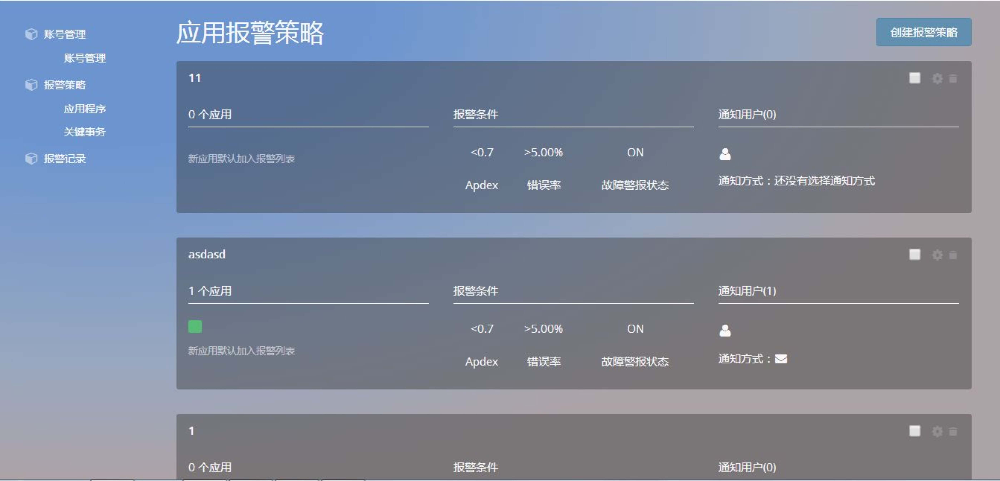
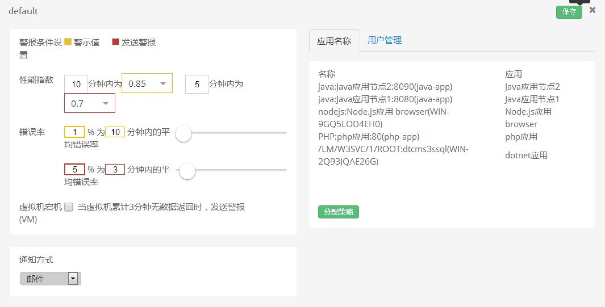

报警策略－应用程序
在应用程序的报警策略页面，可以设置应用的报警策略，当应用的性能指 标出现异常时，Ai 会触发报警策略通知用户，使用户能对应用的性能进行实时 的监控（根据 Apdex、错误率和是否宕机来设置报警阈值）。
该页面主要有报警策略、创建报警策略按钮这 2 个部分。
报警策略：
- 每一个报警策略，都分为 4 个模块：策略名称;策略操作，包括禁用（禁用后可以 启用）、删除、修改等操作;策略报警条件，包括 Apdex 报警阈值、错误率报警阈
值、是否开启宕机报警;通知用户，包括需要通知的账号、通知方式。

创建报警策略：
点击“创建报警策略”，通过填写策略名称，并且配置报 警策略的各项阈值，可增加报警策略。
关于如何配置报警策略的各项指标，将在后面进行介绍。
报警策略的设置
- 点击报警策略的“编辑”小图标，会展示当前报警策略的配置窗口。
报警策略：
- 配置报警策略时，除了最开始新增报警策略，不能再修改报警策略的名称。
配置“严重问题”、“告警问题”、“宕机”三类问题的报警阈值：
- 告警问题——标黄部分，默认为“当 10 分钟内性能指数低于 0.85，或者 10 分钟内平均错误率高于 1%，则触发告警问题通知”（参数均可以自行调整）
- 严重问题——标红部分，默认为“当 5 分钟内性能指数低于 0.7，或者 3 分钟内平均错误率高于 5%，则触发严重问题通知“（参数均可以自行调整）
- 宕机问题——默认勾选，“当 3 分钟内没有数据返回时，则认为虚拟机宕机，触发宕机问题通知”（参数不能调整，只能选择是否开启宕机问题通知）
选择应用：
选择使用当前策略实现报警的应用时，在“应用名称”栏，点击“分配策略”，则会 出现应用列表，同时展示各个应用的 agent。通过勾选 agent，可以使这些 agent 按 照当前报警策略的设置，进行问题报警。（1 个 agent，只能在某一个报警策略中被 勾选。在为其他报警策略分配应用时，该 agent 不会再出现于列表中。）
分配应用时，是以 agent 为基本单位来进行勾选。也就是说，如果一个应用有多个 agent，原则上，用户可以为该应用的不同 agent 设置不同的报警策略。然而，这样 会影响 Ai 监控应用的整体性能。我们不建议用户这样操作。

通知方式：
- 选择通知方式时，可选择邮件、短信的任意组合。默认不进行通知。
通知方式：
- 选择使用当前策略进行通知时，在“用户管理”栏，点击 “管理用户”，则会出现账户列表。通过勾选账户，可以 使这些账户按照当前报警策略的设置，接收报警通知。 （1 个账户，可以同时接收多个策略的报警通知。）